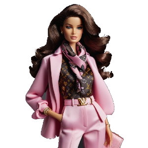

-
Bler Millicent
Profissão: EstilistaDescrição
Nascida em Paris Bler Milicent mudou-se para Malibu para passar uma temporada na Dreamhouse casa de sua prima Barbie, pois, estudou moda com sua mãe Milicent e quer se expandir em Malibu com ajuda de Barbie e suas amigas. Porém Barbie só não sabe que Bler tem o poder de conversar com as fadas da moda para que elas possam estar jogando brilho em suas criações chamando atenção de Malibu, causando um efeito super mágico em seus vestidos.
-
Sophia Bernard
Profissão: Feiticeira.png)
Descrição
Filha mais velha da vigésima geração de feiticeiros, tem facilidade com venenos e magias que envolve fogo,boa com lutas corpo a corpo e arco e flecha criada desde de pequena por seus pais para ser a melhor feiticeira do reino
-
Maya Stallone
Profissão: Vaqueira
Descrição
Habilidades com animais tem poderes para cura-los, com o passar do tempo aprendeu a falar com eles herdou isso de sua família materna descobriu que esses poderes passam de geração para geração, adora morar na fazenda King Ranch na qual foi criada des de pequena para desenvolver seus poderes des de pequena.
-
Medalyne Crüe
Profissão: Escritora
Descrição
Medalyne Crüe era uma Barbie comum até encontrar um anel encantado em uma loja de antiguidades. Ao colocá-lo, foi envolvida por uma névoa que a transformou em uma vampira: seus olhos tornaram-se vermelhos, presas surgiram e sua pele ficou pálida. Apesar de seus novos poderes — como transformação em névoa, força sobre-humana e hipnose — Medalyne manteve um coração bondoso, optando por se alimentar de sangue artificial criado em seu laboratório.hoje em dia trbalha como escritora de terror em Malibu